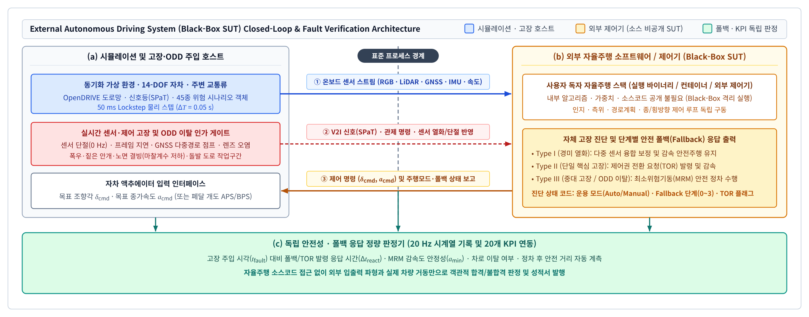
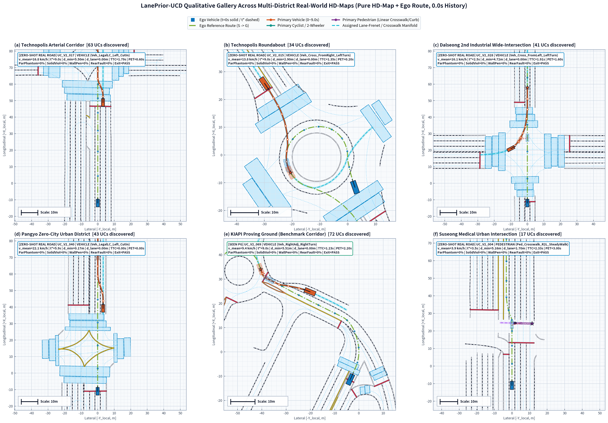

검증 대상 자율주행 시스템(SUT) 연동 및 국제표준 시나리오 활용
외부 자율주행 소프트웨어를 블랙박스 형태로 연결하는 폐루프 입출력 신호 규격, 내장 기준 제어기 모드, 고장·ODD 이탈 시 3단계 안전 폴백 점검 기준, 그리고 국제표준(ISO 34501 등) 기반 논리 유즈케이스 패키지 구조를 안내합니다.
1. 주행 제어 모드 구분
Tab 2 상단의 제어 메뉴에서는 평가 대상 자율주행 시스템을 연결하는 폐루프 모드와, 외부 자율주행 시스템 연결 없이 맵·센서·시나리오 동작을 먼저 확인하기 위한 3가지 내장 주행 모드를 선택할 수 있습니다.

그림 1. 시뮬레이션·고장 주입 호스트(a)와 외부 검증 대상 자율주행 시스템(Black-Box SUT, b) 간의 표준 폐루프 연동 및 독립 안전성·폴백 판정(c) 구조.
| 제어 모드 | 용도 | 동작 방식 |
|---|---|---|
| 폐루프 자율주행 시스템 연동 | 검증 대상 자율주행 SW(SUT) 평가 | 시뮬레이터가 가상 센서 신호를 송출하고, 외부 자율주행 시스템이 출력한 조향·가감속·등화·안전모드 명령을 받아 자차를 구동 |
| 내장 Stanley + PID 제어 | 환경·시나리오 사전 점검용 기준 주행 | 전륜 횡오차 제어와 종방향 속도 PID 제어를 이용한 내장 경로 추종 |
| 내장 Pure-Pursuit 제어 | 전방 주시점 기반 기준 주행 비교 | 속도 비례 전방 주시 거리(Lookahead) 기반 기하학적 추종 |
| 정밀 궤적 주행 (Kinematic) | 센서 데이터 취득 및 로그 궤적 재생 | 타이어 슬립 없이 기준 경로와 속도 프로파일을 그대로 추종 |
ℹ️ 블랙박스 연동 구조
검증 대상 자율주행 소프트웨어(SUT)의 내부 소스코드나 알고리즘 구조는 요구되지 않으며, 정의된 센서 입력과 제어 출력 채널만 연결하여 실행 파일 또는 컨테이너 상태로 폐루프 시험을 수행합니다.
2. 시뮬레이터 ↔ 자율주행 시스템(SUT) 입출력 신호 규격
폐루프 연동 시 교환되는 표준 입출력 채널과 데이터 필드 규격입니다(개별 센서의 광학·물리 특성은 가상 센서 문서를, 센서·통신 고장 주입 모드는 시나리오·고장 가이드를 참조).
| 전송 방향 | 채널 구분 | 주기 | 전달 데이터 필드 및 단위 규격 |
|---|---|---|---|
| 시뮬레이터 → SUT | 3D LiDAR 점군 | 10 ~ 20 Hz | 센서 기준 3차원 직교 좌표 (x, y, z) [m] 및 정규화 반사 강도 intensity [0~255] 배열 |
| 시뮬레이터 → SUT | 전방 영상 & 교통신호(SPaT) | 20 Hz | RGB 영상 프레임 배열, 접근 교차로 유효 현시 코드 및 현시 잔여시간 [s] |
| 시뮬레이터 → SUT | 전방 레이더 & 후측방(BSD) | 20 Hz | 검출 타겟별 상대거리 [m] · 상대속도 [m/s] 리스트, 좌·우 차로 점유 불리언 플래그 |
| 시뮬레이터 → SUT | 측위 · 관성 상태 | 20 Hz | 경위도 [deg], 국소 평면좌표 (X, Y, Z) [m], RTK 상태 코드, 3축 자세 [rad] · 각속도 [rad/s] |
| 시뮬레이터 → SUT | 노변 인프라(V2I) 메시지 | 10 Hz | 구간 기상·노면 ODD 상태 코드, 교차로 위험 감속 권고 속도 [km/h] 및 무선 링크 유효 플래그 |
| SUT → 시뮬레이터 | 종·횡방향 구동 명령 | 20 Hz | 목표 조향핸들각 [0.1° 단위], 목표 속도 [km/h] 또는 목표 가감속도 [m/s²], 비상제동(AEB) 플래그 |
| SUT → 시뮬레이터 | 등화 · 안전 운용 상태 | 20 Hz | 좌·우 방향지시등 및 비상등 점등 플래그, 자체 진단 ODD 적합 여부, 활성 폴백 등급(Type 0~3) |
3. 고장 및 ODD 이탈 시 안전 폴백(DDT Fallback) 확인 항목
- Type 1 — 기능 저하 감속 운행 (Degraded Mode): 약우·약안개·인프라 무선 단절 등 조건부 운행 구간에서 제한 속도(예: 30 km/h 이하)로 감속 주행하는지 확인합니다.
- Type 2 — 제어권 전환 요청 (TOR): 단일 센서 고장 또는 기상 한계 초과 시 비상등을 점등하고 서행하면서 운전자 개입을 요청하며, 제한 시간(예: 5초) 내 수동 개입이 없을 때 3단계 비상정지로 전환하는지 확인합니다.
- Type 3 — 최소위험기동 비상정지 (MRM): 복합 센서 장애, 제어 통신 단절, 측위 급변, 결빙 노면 발생 시 즉시 차로 내 정차를 수행하는지 확인합니다.
4. 국제표준 연계 논리 유즈케이스 패키지 구조
정밀도로지도와 목표 경로를 기반으로 도출되는 논리 유즈케이스 데이터는 정량 검증 프로그램(Tab 3)과 호환되는 JSON 요약 명세서 + 10Hz(9.0초, 91스텝) 객체 기준 궤적 CSV 형식으로 관리되며 아래 4개 표준 항목을 포함합니다:
- ISO 34501 계층 분류: Functional → Abstract → Logical → Concrete 단계별 시나리오 정의.
- IEEE Std 2846 운동학 가정: 주변 차량·보행자·이륜차의 속도·가감속·반응시간 파라미터 범위.
- AVSC 00008 행동역량 매핑: 해당 시나리오가 평가하는 행동역량(
RI-1~4,DC-1~4) 및 연계 KPI 번호. - AVSC 00006 안전 기준 시각: 위험 객체 가시선 확보 시점(OEDR 기준 시각
t₀) 및 TTC·THW·RSS 판정 기준.

그림 2. 권역별 정밀도로지도와 주행 경로 위에서 도출된 다중 에이전트 논리 유즈케이스 예시.